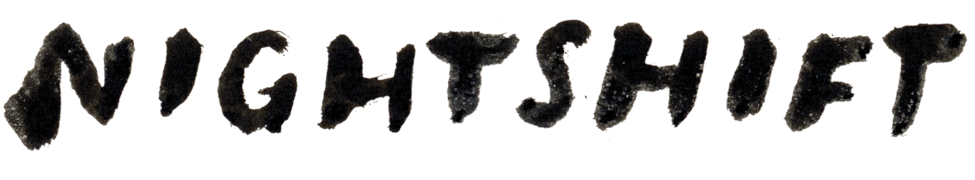

NIGHTSHIFT

nightshiftensemble@gmail.com
- Monday 29th September 2025 - Old Hairdressers, Glasgow - supporting Modern Nature - tickets here - Freakender/Pop Mutations
New AA side single Dice/Firefly out now!
Please consider making a donation direct to Children Not Numbers, who are on the ground, providing immediate aid and working towards sustainable solutions for the children of Gaza.
Nightshift are (currently):
- Eothen Stearn - vocals, synth, percussion
- Andrew Robert Doig - vocals, bass, guitar, percussion
- Chris White - guitar
- Robert Alexander - drums, penny whistle
- Joan Sweeney - violin, vocals, bass
- Nic Miller - bass, vocals